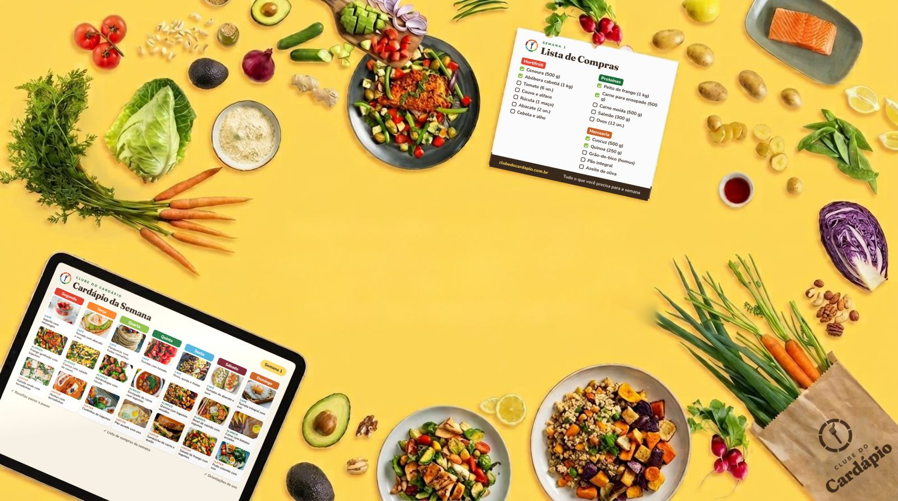
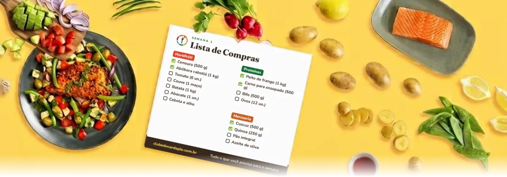
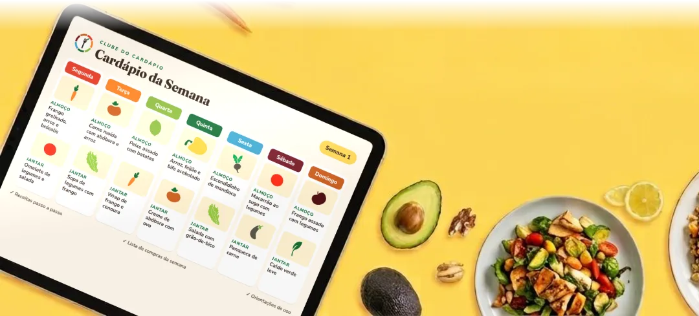
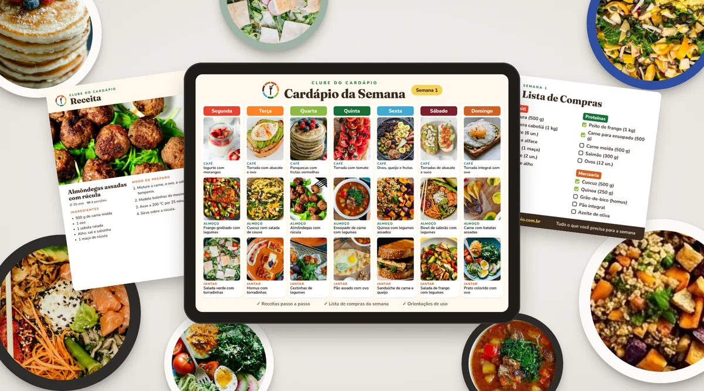
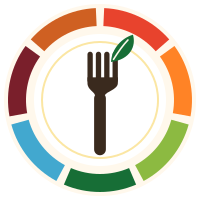

Cardápio de 7 Dias
Experimente uma semana inteira planejada para a família.
- Cardápio de 7 dias
- Receitas passo a passo
- Lista de compras da semana
- Orientações de uso


Cardápio da semana, receitas simples e lista de compras organizada, feitos pela nutricionista Rita Magalhães.

Experimente uma semana inteira planejada para a família.
4 semanas de cardápio, entregues uma por semana.
(mesma estrutura, produtos de Idosos)
(mesma estrutura, produtos Para Você: 1 pessoa · rotina corrida · marmita)
As situações que mais pesam na rotina de quem cuida da alimentação da casa.
Abrir a geladeira e não saber o que fazer com o que tem.
Ir ao mercado três vezes na semana e ainda faltar coisa.
Cada um querer comer uma coisa diferente.
Acabar pedindo comida porque não deu tempo de pensar.
Para idosos, para a família ou só para você.
Pagamento pela Eduzz, com acesso liberado na hora.
Siga a lista de compras da semana, organizada por setor.
Receitas simples, dia a dia, do almoço ao jantar.

Café da manhã, almoço e jantar planejados para os 7 dias. Você não precisa decidir o que comer.
Tudo o que você precisa para a semana, separado por setor do mercado, para comprar uma vez só.
Preparos simples, com ingredientes do dia a dia, explicados de um jeito fácil de seguir.
[Depoimento real 1: texto enviado pela equipe]
[Depoimento real 2]
[Depoimento real 3]

Eu sei que, na correria do dia a dia, decidir o que comer, organizar as compras e preparar as refeições pode ser cansativo. Por isso, criei o Clube do Cardápio: para ajudar você a transformar essa rotina em algo mais simples, prático e tranquilo, tornando o momento de comer mais leve e prazeroso.
Rita Magalhães
Se não gostar, você pede o reembolso dentro do prazo pela própria Eduzz.
Os cardápios são materiais de planejamento e organização alimentar. Não substituem consulta, avaliação ou acompanhamento individual com nutricionista ou médico.
Você recebe um arquivo PDF digital contendo o planejamento completo das suas refeições, receitas detalhadas e uma lista de compras organizada para facilitar seu dia a dia.
Após a confirmação da compra, você recebe o acesso ao PDF por e-mail. O material é digital e pode ser baixado e acessado em qualquer dispositivo.
Sim, todo o material é digital. Você recebe um PDF que pode acessar pelo celular, tablet ou computador.
Cada cardápio acompanha o planejamento das refeições (café da manhã, almoço e jantar), receitas detalhadas e uma lista de compras organizada.
Sim! A lista de compras é um dos diferenciais do Clube do Cardápio. Ela vem organizada para que você compre somente o que precisa, sem esquecimentos e sem desperdício.
Sim, todas as preparações possuem receitas detalhadas com passo a passo claro e simples, pensadas para serem fáceis de seguir.
No cardápio de 30 dias, você recebe um novo PDF a cada 7 dias. Cada entrega contém o planejamento da semana, receitas e lista de compras. Assim, você vai organizando sua alimentação ao longo do mês, sem precisar receber tudo de uma vez.
As regras de renovação e cancelamento da assinatura seguem as condições da plataforma de pagamento (Eduzz), que serão informadas na página de compra antes da confirmação.
O cardápio de 7 dias é uma semana completa — ideal para quem quer começar. O de 30 dias oferece continuidade, com entregas semanais ao longo do mês.
Para quem quer organizar a alimentação de forma prática: idosos, famílias e quem cozinha só para si, inclusive quem leva marmita para o trabalho. Cada público tem um cardápio pensado para suas necessidades.
Escolha o cardápio ideal para você, clique no botão de compra do plano escolhido e siga o processo de compra. O pagamento é processado de forma segura e você recebe o material por e-mail.
Texto maior, botões maiores e contraste reforçado para leitura confortável.
Quero o cardápio para idosos